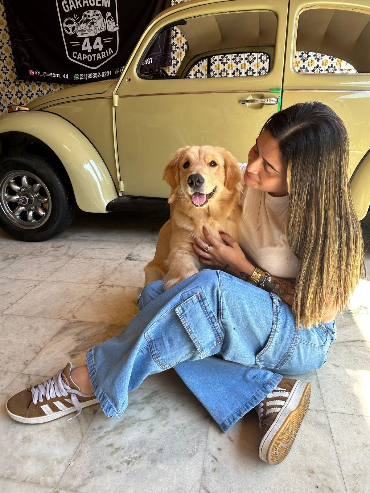

Consulta pediátrica
Os primeiros meses definem a saúde futura: avaliação completa, alimentação e orientação para o tutor.
Atendimento domiciliar para cães, gatos e pets exóticos — com hora marcada, plano de cuidado individual e zero correria.

Veterinária domiciliarUma rotina de visitas, sem correria.
Sem trânsito, sem espera e sem contato com outros animais — e uma avaliação mais natural do comportamento do seu pet.
Ambiente conhecido, cheiros familiares e nenhum deslocamento.
Horário marcado, no seu sofá.
Cada visita é pensada para a rotina e a espécie do paciente.
Coelhos, porquinhos-da-índia, chinchilas, aves, pequenos roedores e répteis. Manejo, alimentação e ambiente avaliados espécie por espécie.
Os primeiros meses definem a saúde futura: avaliação completa, alimentação e orientação para o tutor.
Protocolo definido pela idade e pelo estilo de vida — aplicação em casa e carteira sempre em dia.
Check-up completo mesmo sem sinais de doença: detecção precoce e orientação de rotina.
Acompanhamento do pet idoso — dor, mobilidade e qualidade de vida — sem o estresse do deslocamento.
"Cuidar é observar, escutar e acompanhar — não só tratar."
O projeto da Drª Carla Chaves nasceu para levar o consultório até você. Cada visita começa com uma conversa sobre rotina, ambiente e histórico do pet, segue com um exame completo e termina com um plano de cuidado claro. Sem pressa, sem fila e com acompanhamento próximo entre as consultas.
Não achou sua resposta? Mande uma mensagem.
Agende uma visita da Drª Carla Chaves e acompanhe de perto a saúde do seu pet.